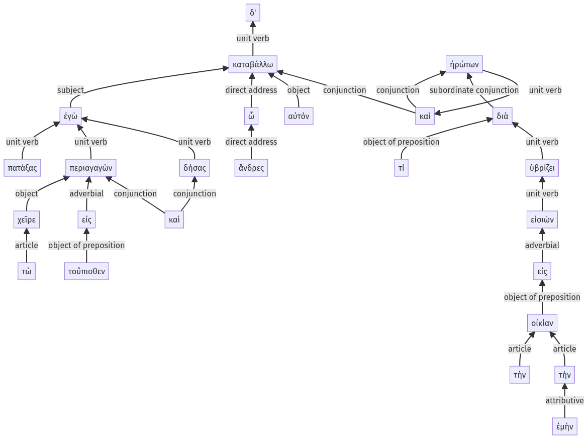

Lysias, Oration 1, 1.25.1-1.25.25a
1.24.28-1.24.52a | 1.25.26-1.25.38a
Sentence 70
1.25.1-1.25.25a
ἐγὼ δ', ὦ ἄνδρες, πατάξας καταβάλλω αὐτόν, καὶ τὼ χεῖρε περιαγαγὼν εἰς τοὔπισθεν καὶ δήσας ἠρώτων διὰ τί ὑβρίζει εἰς τὴν οἰκίαν τὴν ἐμὴν εἰσιών.
1 ἐγὼ ὦ ἄνδρες
2 πατάξας
1 καταβάλλω αὐτόν
1 καὶ
3 τὼ χεῖρε περιαγαγὼν εἰς τοὔπισθεν
3 καὶ δήσας
1 ἠρώτων
2 διὰ τί ὑβρίζει εἰς τὴν οἰκίαν τὴν ἐμὴν
3 εἰσιών
ἐγὼ δ', ὦ ἄνδρες, πατάξας καταβάλλω αὐτόν, καὶ τὼ χεῖρε περιαγαγὼν εἰς τοὔπισθεν καὶ δήσας ἠρώτων διὰ τί ὑβρίζει εἰς τὴν οἰκίαν τὴν ἐμὴν εἰσιών.
Highlighting:
- connecting words
- unit verb
- subject
- object
Color code:
- independent clause (level 1, transitive verb)
- circumstantial participle (level 2, transitive verb)
- independent clause (level 1, transitive verb)
- subordinate clause (level 2, intransitive verb)
- circumstantial participle (level 3, intransitive verb)
- circumstantial participle (level 3, transitive verb)
- circumstantial participle (level 3, transitive verb)
